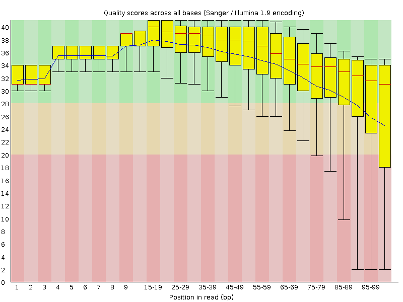
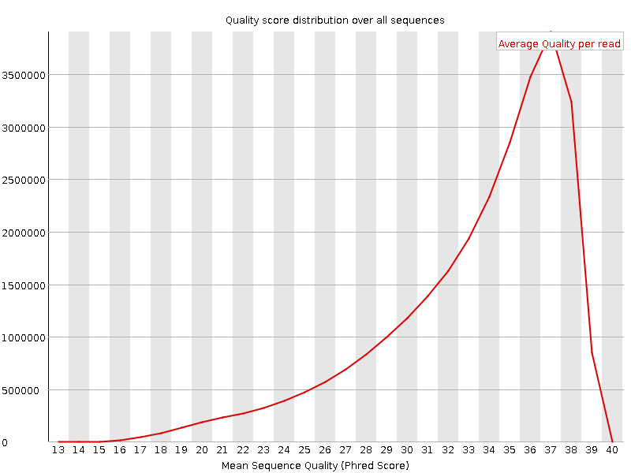
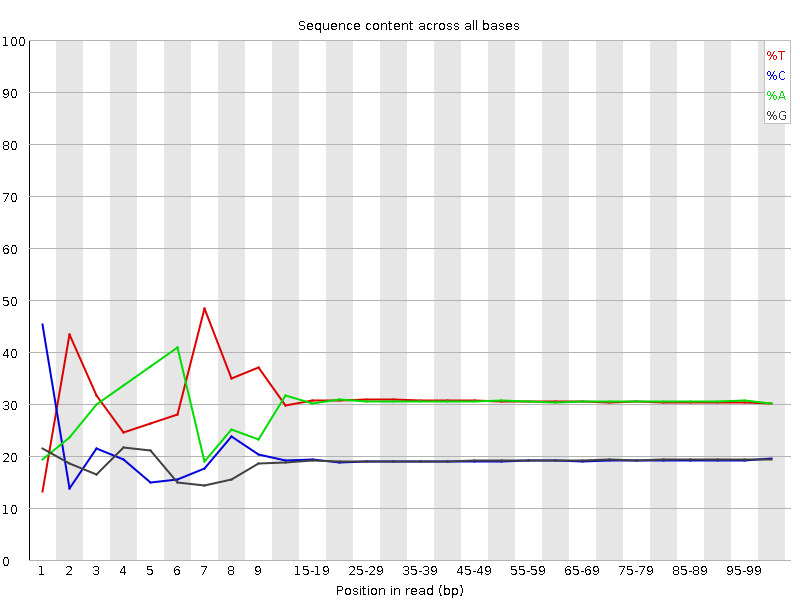
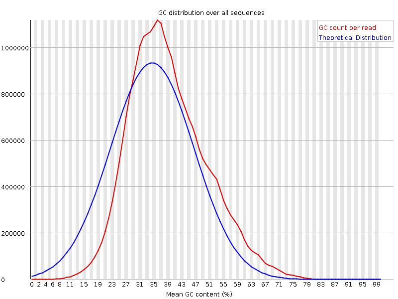
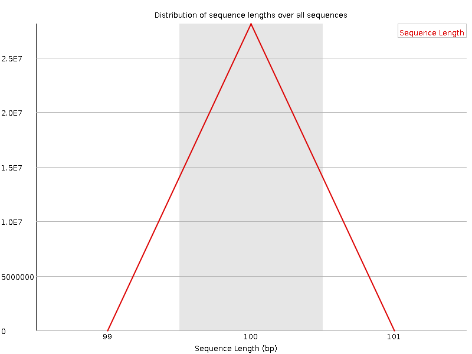
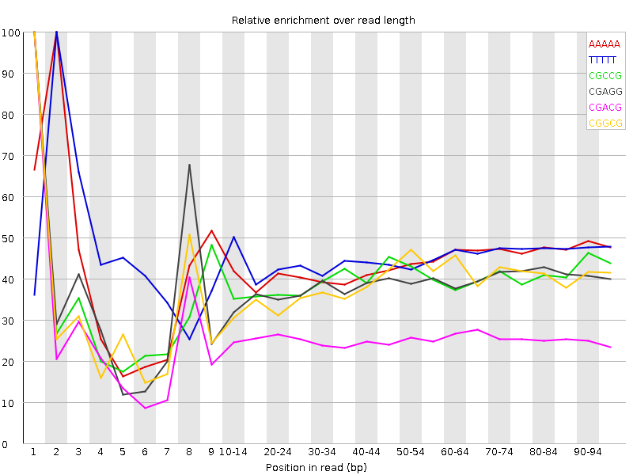

![[OK]](Icons/tick.png) Basic Statistics
Basic Statistics
| Measure | Value |
|---|---|
| Filename | c1.1.fq |
| File type | Conventional base calls |
| Encoding | Sanger / Illumina 1.9 |
| Total Sequences | 28103477 |
| Filtered Sequences | 0 |
| Sequence length | 100 |
| %GC | 38 |
Per base sequence quality

Per sequence quality scores

![[FAIL]](Icons/error.png) Per base sequence content
Per base sequence content

Per base GC content

![[WARN]](Icons/warning.png) Per sequence GC content
Per sequence GC content

Per base N content

Sequence Length Distribution

Sequence Duplication Levels

Overrepresented sequences
No overrepresented sequences
Kmer Content

| Sequence | Count | Obs/Exp Overall | Obs/Exp Max | Max Obs/Exp Position |
|---|---|---|---|---|
| AAAAA | 17612850 | 2.4612916 | 5.627038 | 2 |
| TTTTT | 18238815 | 2.4355865 | 5.368447 | 2 |
| CGCCG | 1500515 | 2.0473866 | 5.169162 | 1 |
| CGAGG | 2310320 | 2.0353503 | 5.255899 | 1 |
| CGACG | 2270395 | 1.9742503 | 7.690427 | 1 |
| CGGCG | 1403720 | 1.940467 | 5.018669 | 1 |
| CGCGG | 1314995 | 1.8178158 | 5.4633865 | 1 |
| CTTCT | 5155865 | 1.726301 | 5.3185143 | 1 |
| CGCGA | 1917735 | 1.6675905 | 5.749762 | 1 |
| CTCGA | 2993140 | 1.6223985 | 8.916385 | 1 |
| CTTCC | 3017820 | 1.599972 | 5.109166 | 1 |
| CGAGA | 2842645 | 1.5753051 | 5.667679 | 1 |
| CGATC | 2864625 | 1.5527384 | 5.0600414 | 4 |
| CTTTT | 7310610 | 1.5458401 | 6.878051 | 1 |
| CAAAA | 7038325 | 1.5433394 | 5.001354 | 1 |
| ATCGA | 4406535 | 1.5221907 | 5.2934513 | 6 |
| CGAAG | 2723835 | 1.5094644 | 5.3611455 | 1 |
| CTGGA | 2740100 | 1.504746 | 7.0176306 | 1 |
| CTTCG | 2777120 | 1.4916945 | 6.5411234 | 1 |
| CTCCA | 2726415 | 1.4586674 | 6.3711386 | 1 |
| CTCGT | 2692150 | 1.446054 | 7.7610393 | 1 |
| CTCGC | 1652610 | 1.4055932 | 6.5076613 | 1 |
| CTCGG | 1621595 | 1.3973265 | 8.031322 | 1 |
| CTGGC | 1583810 | 1.3647672 | 5.7010756 | 1 |
| CGAAA | 3893485 | 1.3572369 | 5.7981725 | 1 |
| CTTCA | 3909180 | 1.320827 | 5.4484916 | 1 |
| GAATC | 3676725 | 1.2700856 | 5.2660165 | 4 |
| CTTGG | 2324260 | 1.2648418 | 6.542103 | 1 |
| CTTGA | 3583705 | 1.2267575 | 5.9590635 | 1 |
| CTTTG | 3603775 | 1.222472 | 5.3264656 | 1 |